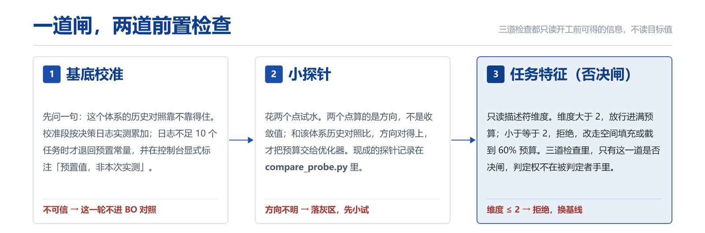

AI4Science Hackathon 2026 · Final · Research Tools
一张开跑前的决策卡：这一次，该不该投贝叶斯优化。
判断只用开工前就拿得到的信息，不读目标值。
01 / Research problem
贝叶斯优化已经是材料筛选的默认做法。但在同一笔 400 次预算下，有相当一部分体系里它跑不过最朴素的均匀铺点，最差的一个差了 33.9 个命中。
这类失败在跑完之后无法归因：赢了算方法有效，输了算体系太难。于是同一个错误会被重复，也不会被记进任何账单。
02 / Approach

03 / What it changes
| 分组 | 任务臂 | 结果 |
|---|---|---|
| 放行 | 27 | 与盲目用优化器完全一致，加总 +960.53 |
| 拒绝 | 9 | 盲目用优化器 −26.17，卡归零 |
| 净差 | — | +26.17（省下 98.53，让掉 72.37） |
04 / Error rate
| 指标 | 数值 | 分母 |
|---|---|---|
| 漏报（该拦没拦） | 0 | 放行的 27 个；95% 上界 12.8% |
| 误杀（不该拦却拦） | 5 | 拒绝的 9 个，误杀率 55.6% |
| 灾难臂拦截 | 4 / 4 | 随机拦 9 个期望只拦到 1 个 |
误杀这 5 个让掉 72.37 个命中，真拒的 4 个省下 98.53。两笔账分开记，不合并成一个好看的数字。
05 / Reproducibility
证据包 155 MB、39 个文件、17,520 条轨迹逐条在包内。每个结论对应一条命令，零第三方依赖，断网可跑；数字与报告不一致时脚本直接报 FAIL。
这批数据是回溯性的、任务同源，这是它最硬的局限，写在结论旁边。四种失效情形：任务与这 36 个臂不同源、预算远超标定区间、指标换成与命中数无关的口径、任务之间强耦合。